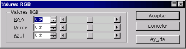

Next: Color
Up: Modificar
Previous: Brillo y contraste
Índice General
Las imágenes que se forman por emisión de luz, como las que se ven en la pantalla de ordenador o la
televisión, están formadas por tres componentes: rojo (red, R), verde (green, G) y azul (blue, B).
Se puede regular cada componente eligiendo en el menú Colores la opción Valores RGB y modificando ahí sus
cantidades.
Figura 5.56:
Valores RGB
|

|
5.56
Proyecto Cursos - LuCAS - http://lucas.hispalinux.es/htmls/cursos.html